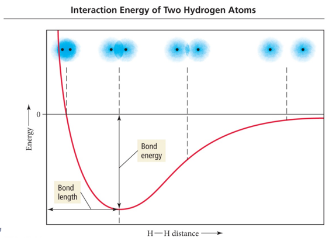

Week 8 - Day 3 (End of Chapter 6)
Navigate using audio
Announcements
- Average test grade was 70
- Ch 6 homework due Sunday night
Polarity of Molecules
- Audio 0:01:22.952892
- For a molecule to be polar, it must have:
- Polar bonds
- Electronegativity difference
- Bond dipole moments - measured
- An unsymmetrical shape
- Vector addition
- Polar bonds
- Audio 0:03:43.776817
- Polarity affects the intermolecular forces of attraction.
- Example:
- Boiling points and solubilities
- Like dissolves like
- Nonbonding pairs affect molecular polarity, a strong pull
Molecule Polarity
- Audio 0:04:17.407335
- The bond between the H atom and Cl atom in HCl molecule is polar.
- The bonding electrons are pulled toward the Cl end of the molecule because Cl is more electronegative (EN) than the H atom.
- The net result is a polar molecule.
-
- Second most electronegative element
- Has polar bonds that are equally polar in opposite directions so the net result is that CO2 is not polar
- The bond between the C atom and O atoms in CO2 molecule is polar.
- The bonding electrons are pulled toward the O ends of the molecule equally because O is more electronegative (EN) than the C atom.
- The net result is a nonpolar molecule.
Audio 0:06:24.175803
Molecule Polarity
- The bond between the O atom and H atoms in H2O molecule is polar.
- Both sets bonding electrons are pulled toward the O end of the molecule equally because O is more electronegative (EN) than the H atom.
- Because of its geometry, the lone pairs do not negate the dipole moment that result from the each of the O–H bonds.
- The net result is a polar molecule.
Vector Addition
- Audio 0:07:47.798794
-
- Water is more like the bent scenario
- The sum of the bonds goes up so it’s polar (the vectors don’t cancel)
- For CO2 and a trigonal planar molecule the vectors are equally strong in directions that cancel eachother out so they are not polar.
- Water is more like the bent scenario
Vector Addition: One Dimension
- One Dimension:
- To add two vectors that lie on the same line, assign one direction as positive.
- Vectors pointing in that direction have positive magnitudes.
- Consider vectors pointing in the opposite direction to have negative magnitudes.
- Audio 0:09:58.418088
- Just draw the first. Draw the second where the first ends and then calculate the net result.
Vector Addition: Two or More Dimensions
- Audio 0:10:34.308430 Two or More Dimensions:
- To add two vectors, draw a parallelogram in which the two vectors form two adjacent sides.
- Draw the other two sides of the parallelogram parallel to and the same length as the two original vectors.
- Draw the resultant vector beginning at the origin and extending to the far corner of the parallelogram as shown in Examples 4 and 5.
- To add three or more vectors, add two of them together first, and then add the third vector to the result (Examples 6 and 7).
Molecular Polarity Affects Solubility in Water
- Audio 0:13:22.721754
- Polar molecules are attracted to other polar molecules.
- Water is a polar molecule; therefore:
- Other polar molecules will dissolve in water.
- As well as ionic compounds
- Some molecules have both polar and nonpolar parts.
- Example: Soap molecule
Summarizing Determining Molecular Shape and Polarity
- Audio 0:14:38.522158
- Draw the Lewis structure for the molecule and determine its molecular geometry.
- Determine if the molecule contains polar bonds.
- A bond is polar if the two bonding atoms have sufficiently different electro negativities.
- If the molecule contains polar bonds, superimpose a vector, pointing toward the more electronegative atom, on each bond.
- Make the length of the vector proportional to the electronegativity difference between the bonding atoms.
- Determine if the polar bonds add together to form a net dipole moment.
- Sum the vectors corresponding to the polar bonds together. If the vectors sum to zero, the molecule is nonpolar.
- If the vectors sum to a net vector, the molecule is polar
Practice Problem: Is a Molecule Polar?
- Audio 0:15:19.845473
- Is NH3 polar?
- Audio 0:17:55.560585
- Does ozone have a dipole moment?
- Yes
Chapter 7
- Audio 0:23:53.507292
- Chemical Bonding II
- Valence Bond and Molecular Orbital Theory
A Magnetic Liquid: O2
- Audio 0:24:34.873518
- Oxygen is paramagnetic.
- Paramagnetic material has unpaired electrons.
- Lewis theory does not predict this result.
Problems with Lewis Theory
- Audio 0:26:13.153424
- Lewis theory generally predicts trends in properties, but it does not give good numerical predictions.
- Example: bond strength and bond length
- Lewis theory gives good first approximations of the bond angles in molecules, but it usually cannot be used to get the actual angle.
- Resonance: Lewis theory cannot write one correct structure for many molecules, and multiple resonance structures is not “elegant”.
- Lewis theory often does not predict the correct magnetic behavior of molecules.
- For example, O2 is paramagnetic, although the Lewis structure predicts it is diamagnetic.
Valence Bond Approach
- Audio 0:28:26.040824
- Change in electron density as two hydrogen atoms approach each other.
- Overlap in two 1s orbitals
- Keep getting closer until nucleus<=>nucleus repulsion balances electron<=>nucleus attraction
Valence Bond Theory: Orbital Overlap and the Chemical Bond
- Audio 0:30:39.283988
- 
Valence Bond Theory: Orbital Overlap and the Chemical Bond
- Applying quantum mechanics to molecules:
- Bonds between atoms should occur when the orbitals on those atoms interact to make a bond.
- Audio 0:33:58.699088
- The kind of interaction depends on whether the orbitals align along the axis between the nuclei, or outside the axis.
Orbital Diagram for the Formation of H2S
- Audio 0:34:54.957208
Valence Bond Theory and NH3
- Audio 0:36:55.262109
- If the bonds form from overlap of 3 2p orbitals on nitrogen with the 1s orbital on each hydrogen atom, what would the molecular geometry of NH3 be?
-
- The predicted geometry is wrong
- If use the 3 2p orbitals predict 90 degrees
- Actual H-N-H bond angle is 107.30
- The predicted geometry is wrong
Hybridization – mixing of two or more atomic orbitals to form a new set of hybrid orbitals.
- Audio 0:38:09.158442
- Mix at least 2 nonequivalent atomic orbitals (e.g. s and p). Hybrid orbitals have very different shape from original atomic orbitals.
- Number of hybrid orbitals is equal to number of pure atomic orbitals used in the hybridization process.
- Covalent bonds are formed by:
- a. Overlap of hybrid orbitals with atomic orbitals
- b. Overlap of hybrid orbitals with other hybrid orbitals
Formation of sp3 Hybrid Orbitals
- Audio 0:40:23.463058
-
- When we hybridize them, we get tetrahedral geometry
-
- These are exactly the right geometry to give us the tetrahedral shape of ammonia
Summarizing Valence Bond Theory
- Audio 0:43:00.758032
- The valence electrons of the atoms in a molecule reside in quantummechanical atomic orbitals.
- The orbitals can be the standard s, p, d, and f orbitals, or they may be hybrid combinations of these.
- A chemical bond results from the overlap of two half-filled orbitals and spin-pairing of the two valence electrons (or less commonly the overlap of a completely filled orbital with an empty orbital).
- The geometry of the overlapping orbitals determines the shape of the molecule.
Valence Bond Theory: Main Concepts
- The valence electrons of the atoms in a molecule reside in quantum-mechanical atomic orbitals. The orbitals can be the standard s, p, d, and f orbitals, or they may be hybrid combinations of these.
- A chemical bond results when these atomic orbitals interact and there is a total of two electrons in the new molecular orbital. a) The electrons must be spin paired.
- The shape of the molecule is determined by the geometry of the interacting orbitals.